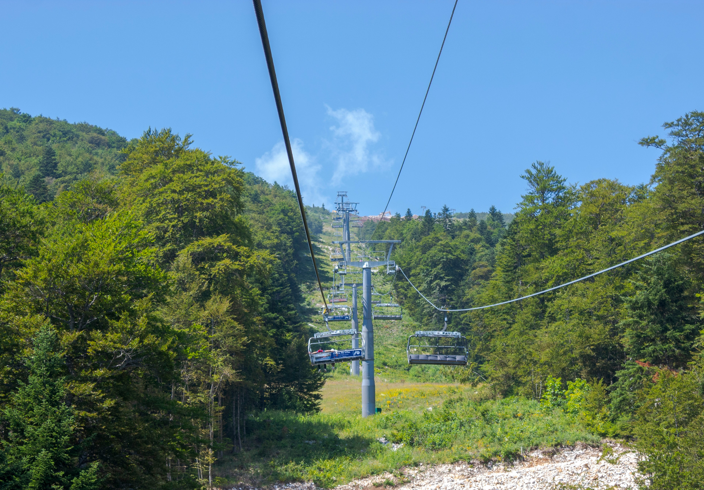

With domestic and international travel changing, travelers are getting creative in planning their cycling vacations. Summer at many of Ontario’s ski resorts can be just as appealing after the snow melts. Also ski resorts are realizing they need to capitalize on more than just the winter season to generate revenue. With global warming, unpredictable weather patterns, aging populations and COVID, many resorts are reinventing themselves as four-season destinations for the staycation crowds. Green season is just as action-packed and exciting and offers a wide array of options for recreational cyclists. If you are looking for a weekend getaway or day trip this summer, we have compiled a list of the best Ontario ski resorts that can serve as a base for outdoor adventures and active cyclists.

GLEN EDEN & KELSO CONCERVATION
Glen Eden ski resort is located in Milton, Ontario just outside of Toronto. Nestled on the beautiful Niagara Escarpment, Glen Eden turns into Kelso Conservation Area in the summer and provides a great getaway for recreational and experienced cyclists. Kelso has some impressive mountain biking trails from beginner to expert level and has hosted numerous mountain bike events such as the Ontario Cup and a regular weekly series. The conservation area offers 30km of trails as well as a man-made lake with a beach and campsites. There are also some terrific road biking routes in the Milton area that can be accessed from Kelso. The EpicTour Granfondo departs every year from Kelso with a variety of routes from 50km to 180km, many of which can be accessed using the route finder app, for pre-event training. The Escarpment provides the perfect backdrop for some epic roads with rolling hills, thick forests and rural farmlands. You would never guess you are close to the GTA on these country roads. The proximity of Kelso to the city makes it an easy day-trip location for those travelling from further away. In Milton and nearby there are plenty of accommodations and dining options. gleneden.on.ca conservationhalton.ca/kelso
CHIOOPEE SKI & SUMMER RESORT
Chicopee has been servicing the Guelph, Kitchener, Waterloo area since 1934 and is a popular ski centre for the region. The green season at Chicopee has a wide variety of options for small and medium size. They have a substantial mountain bike trail network with single-track trails across the 165 acre property. The multi-use trail system has everything for the enthusiast including demanding climbs, descents and technical features as well as more novice-friendly trails. The resort offers day camps, rentals and bike lessons for families. If mountain biking is not your thing there are plenty of lovely trails connecting small rural communities, rivers and Mennonite country. Explore some of the Grand River’s 290km watershed via the Walter Bean Grand River Trail, which runs through Waterloo, Kitchener, Cambridge and Woolwich and North Dumfries Townships. Another popular route is the Kissing Bridge Trailway, a part of the longer Guelph to Goderich Rail Trail. This 45km trail has a 2km detour to the last-covered bridge that is driveable by car in Ontario at West Montrose Kissing Bridge. With the ski hill located just a few kilometres from the urban centres of Kitchener, Waterloo and Cambridge, there are a wide variety of accommodations, breweries and eateries nearby. discoverchicopee.com
